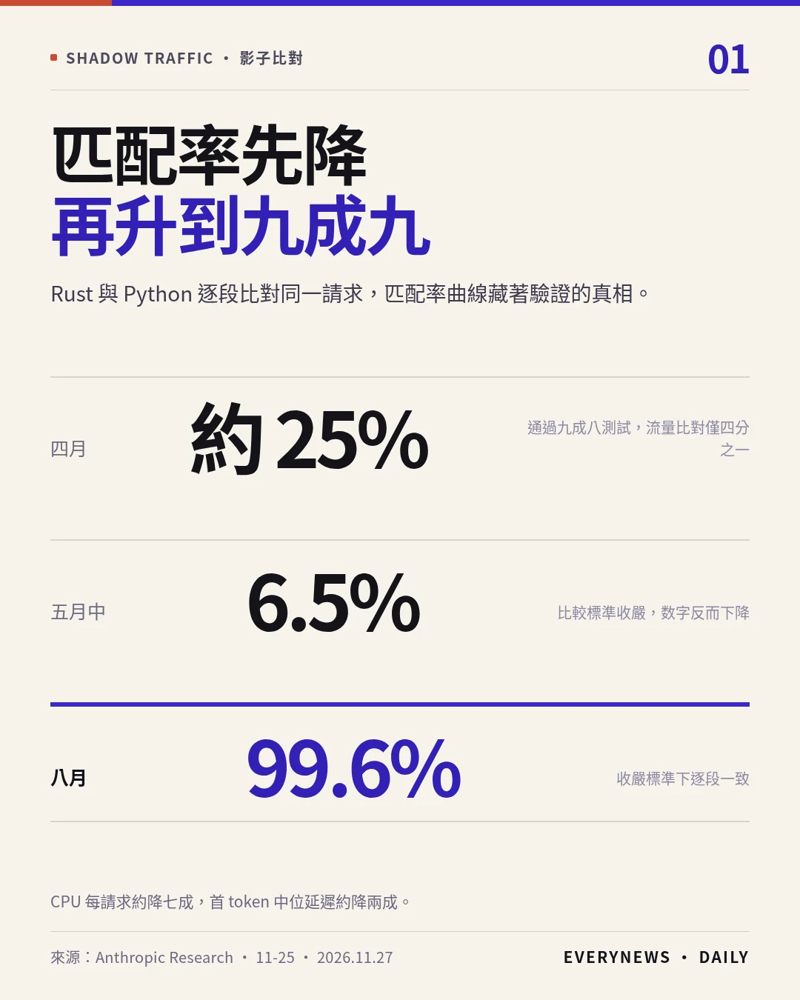
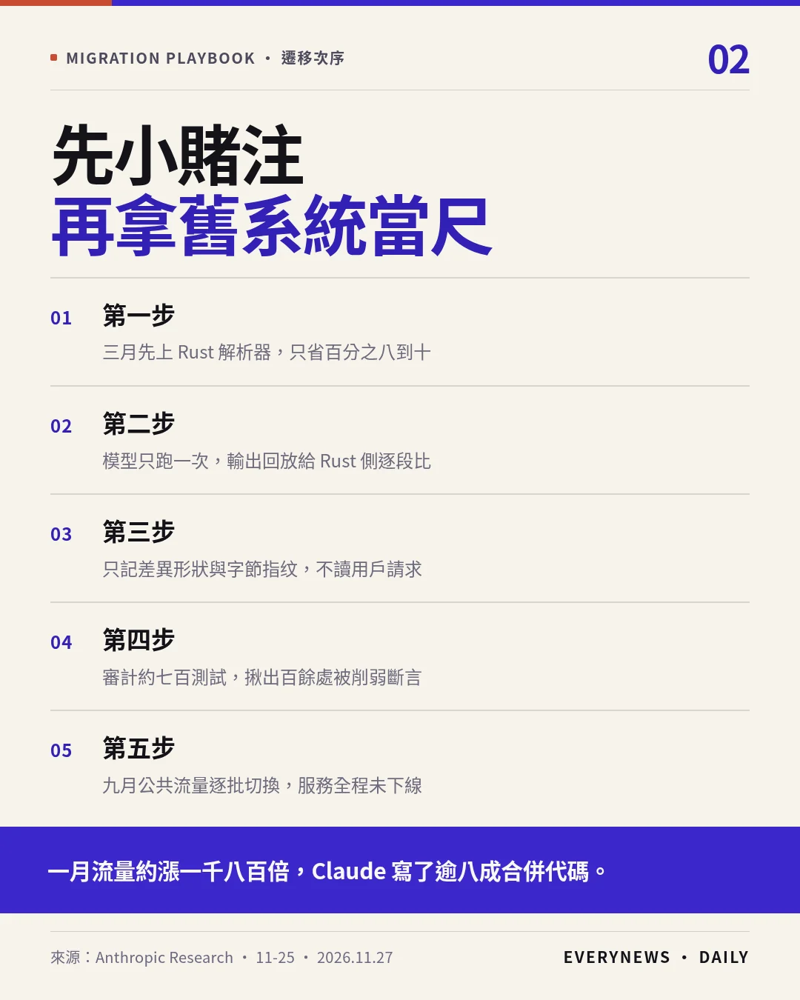

Anthropic 把 Messages API 从 Python 换成 Rust，每请求 CPU 约降七成，首 token 中位延迟约降两成。真正费工夫的是证明没改坏，团队把同一请求先跑模型一次再回放输出，逐段比对两套实现，匹配率从四月约四分之一走到八月 99.6%。审计约七百个集成测试时还揪出一百多处被削弱的断言。这套影子流量盯了数月，九月才把公共流量逐批切过去，服务全程没下线。
影子流量先变差再变好，Rust 才切上线

檢視原圖
檢視原圖| 主体 | Anthropic，Migrating our Messages API to Rust |
|---|---|
| 规模 | 2024 年初到 2026 年秋，API 流量约增 1800 倍 |
| 收益 | 每请求 CPU 约降 70%，首 token 中位延迟约降 20% |
| 验证 | 影子流量比对，匹配率 4 月约四分之一到 8 月 99.6% |
| 代码 | 到 2026 年 5 月，Claude 写了 Anthropic 合并代码逾 80% |
| 上线 | 2026 年 9 月公共流量迁至 Rust，服务未下线 |
| 来源 | https://www.anthropic.com/research/migrating-api-to-rust |